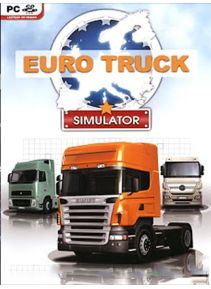

Euro Truck Simulator este un joc simulator de camion creat de SCS Software, folosind OpenGL.Euro Truck Simulator a fost lansat pe dată de 29 august 2008, iar versiunea Gold Edition pe dată de 15 aprilie 2008.
Jucatorul simulează activitatea unui şofer de camioane, având la dispoziţie o mica parte din Europa, mai exact ţarile din mijlocul Europei, acestea fiind Spania, Portugalia, Germania, Franţa, Italia, Elveţia, Polonia, Austria, Belgia, Republica Ceha, Olanda şi Marea Britanie, dar Marea Britanie a fost disponibil doar în versiunile 1.2 si 1.3.
Jocul este stabilit în Europa care dispune de modelele de camioane din Europa şi sunt dotate cu instrumente de lucru reale, cum ar fi indicatorii de intermitente, de temperatură şi lumini de avertizare a combustibilului, ştergatoare.
Preţ : 17,00 €